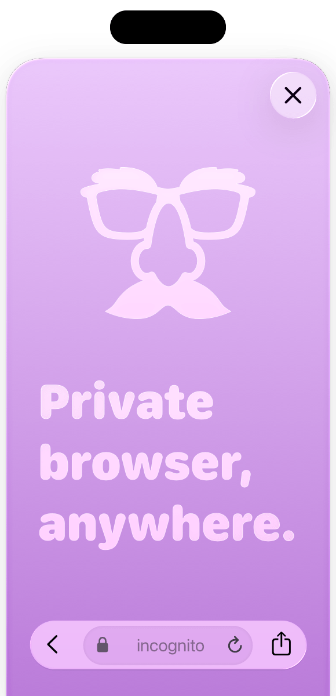
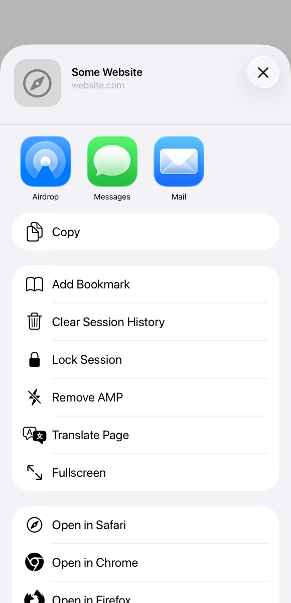
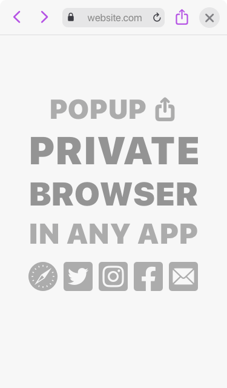
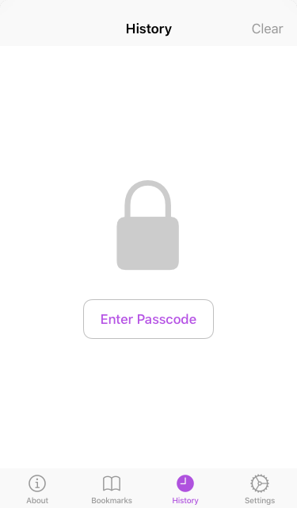
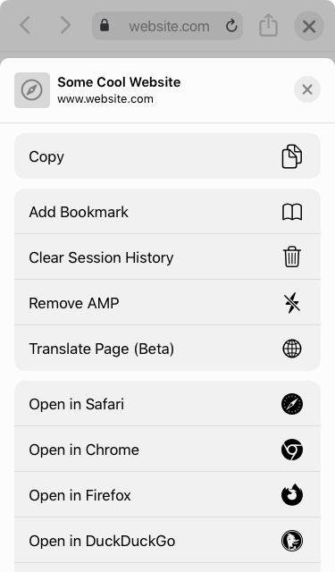

Incognito Browser
Open a web browser from inside any app.
Everything you do is kept private.

Incognito helps you avoid the spying eyes of in‑app browsers.¹
Pop‑up a secure browser inside any app, right from the share sheet.
Reset cookie paywalls and lose the trackers.

Advanced Features
Pro tools: translate, remove AMP, clear session history.
Choose your search engine: Google, Kagi, Bing, DuckDuckGo, etc.
Automate with Shortcuts.
Passcode-lock your history and bookmarks.
Backup bookmarks and history to iCloud — or don’t!
Reopen a page with archive.is.
Fullscreen browsing.
Data Not Collected
- No cookies
- No trackers
- No ads
- No subscriptions
- No sketchy search engines
100% Private
Incognito is simple: pay once, upfront. No subscriptions or in‑app purchase. No bait‑and‑switch.
Some “free” private browser apps use sketchy, potentially unsafe search engines. Incognito lets you choose from Google, Kagi, DuckDuckGo, and many more.
Browse Anywhere

Lock Your History

Share Like a Pro

Incognito helps you avoid the spying eyes of in‑app browsers.¹
Pop-up a secure browser inside any app, right from the share sheet.
Choose your search engine: Google, Kagi, Bing, DuckDuckGo, etc.
Pro tools: translate, remove AMP, open in archive.is, automate with Shortcuts.
Reset cookie paywalls and block trackers.
Passcode-lock your history and bookmarks.
Fullscreen browsing.
100% private — no subscription, no ads, no sketchy search engines or embedded trackers. No bait-and-switch.
PCMag, 3 Sept. 2025